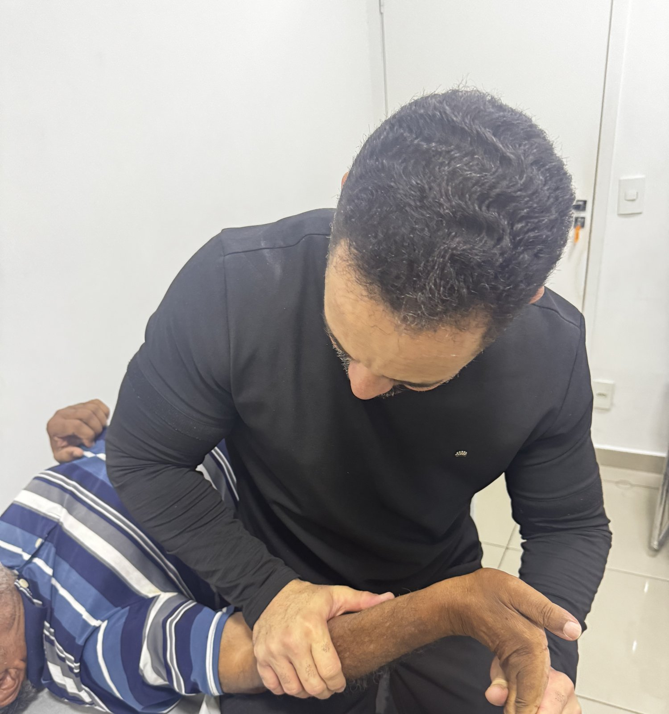

Tratamento de fisioterapia individualizado com o Doutor Emivaldo Maia — sem protocolo engessado, focado na causa da sua dor. Avaliação completa antes de qualquer plano.
Agendar avaliação no WhatsAppClique no botão e conte, em poucas palavras, o que tá te incomodando.
A Lu (ou o próprio Doutor Emivaldo) entende sua queixa e o histórico, sem enrolação.
Escolhe o melhor horário e vem até a clínica, no 10º andar das Perdizes.
Coluna é a especialidade, mas o consultório atende qualquer queixa musculoesquelética — sem restrição de idade.
Lombar, cervical, ciático ou dores articulares que não passam com o tempo.
Recuperação de lesões pra voltar a treinar e competir com segurança.
Acompanhamento seguro pra acelerar sua recuperação depois da cirurgia.
Mobilidade, equilíbrio e alívio de desgaste articular pra manter a rotina.

Fisioterapeuta especialista em coluna, com ampla experiência em fisioterapia geral. Atende sozinho, com a Lu na recepção — uma clínica pequena, pensada pra atenção real, não pra volume de pacientes.
Cada avaliação é feita por ele mesmo, do início ao fim. Não existe protocolo padrão aplicado igual pra todo mundo: o plano de tratamento nasce do que ele encontra no seu corpo, na sua avaliação.
Antes de qualquer sessão, o Doutor Emivaldo faz uma avaliação completa — analisa seus movimentos, entende há quanto tempo a dor te incomoda e o que já foi tentado antes. É a partir disso que ele traça exatamente o que o seu corpo precisa.
O consultório fica no 10º andar, num ambiente pequeno e acolhedor — pensado pra você se sentir à vontade, não numa esteira de clínica grande.
Um ambiente leve e acolhedor, preparado pela Lu, esperando por você no 10º andar.
Av. Marquês de São Vicente, 2219
Sala 1011 · 10º Andar
Jardim das Perdizes, São Paulo - SP